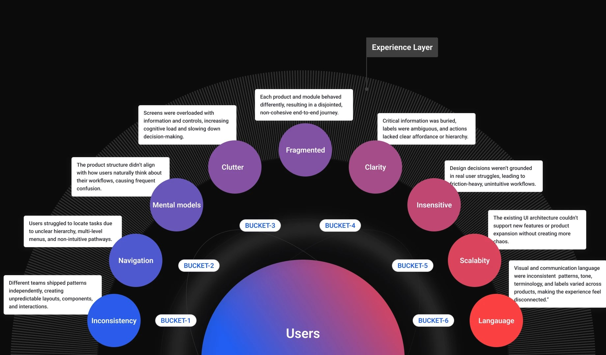
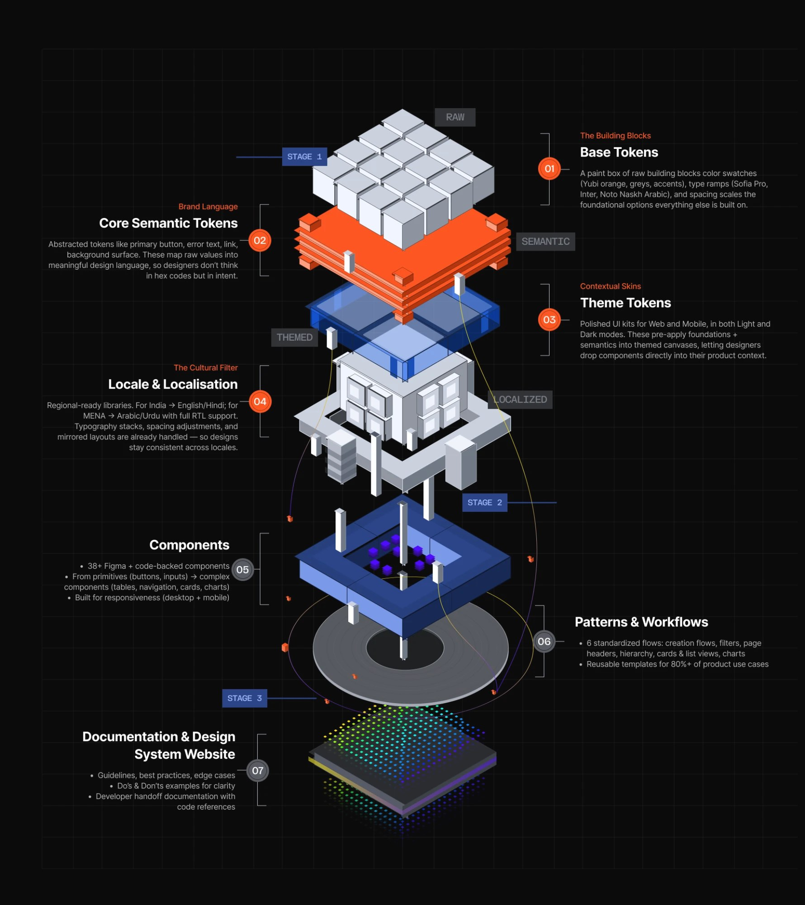
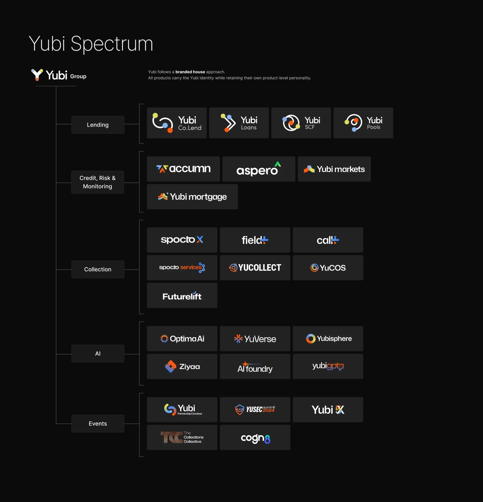
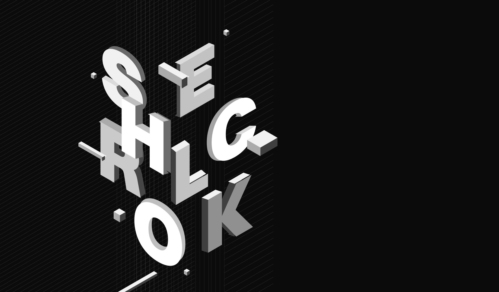
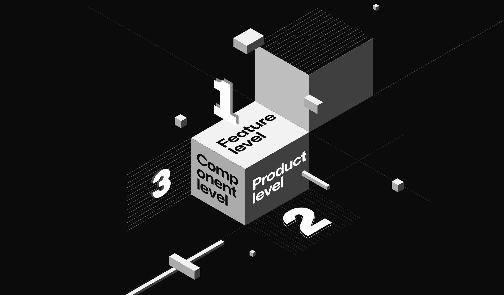
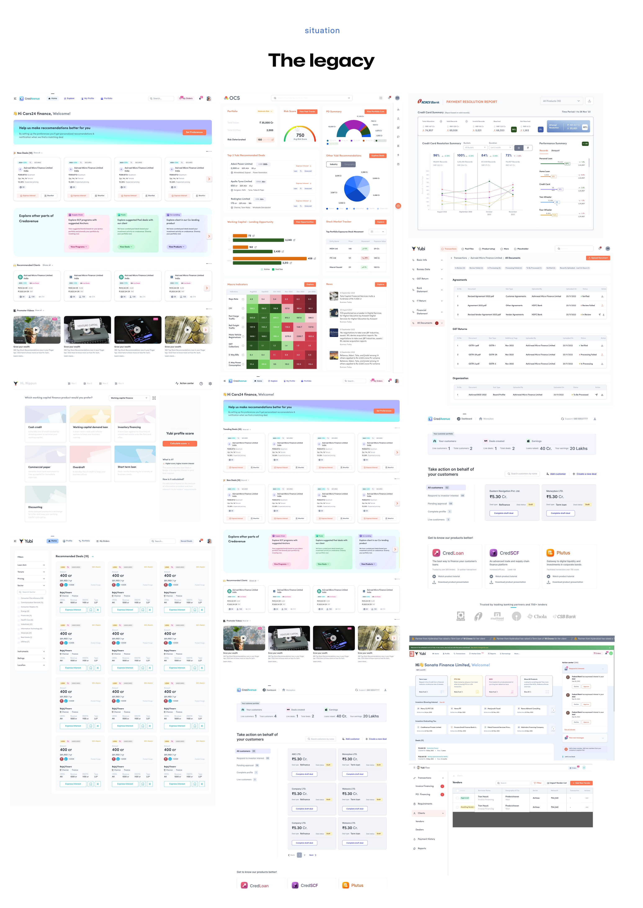
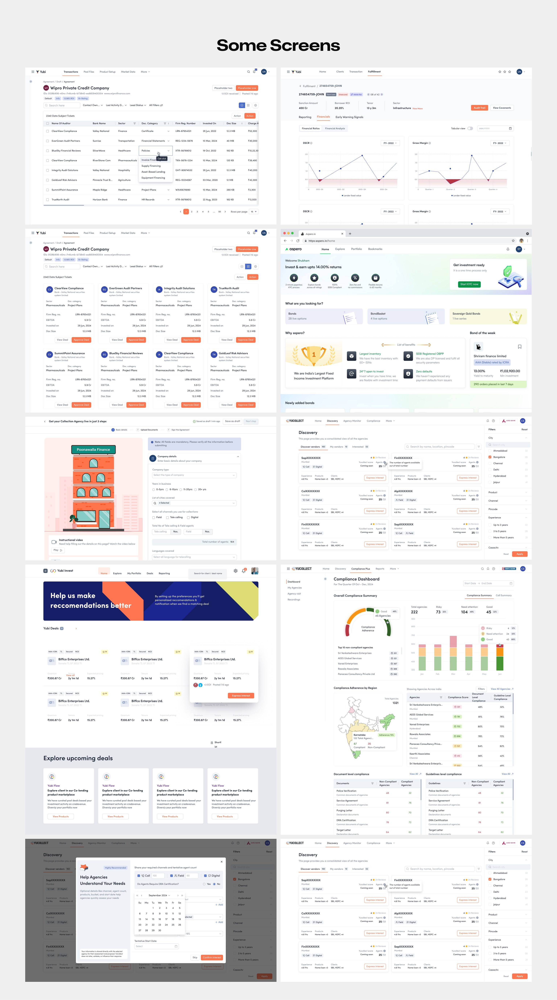
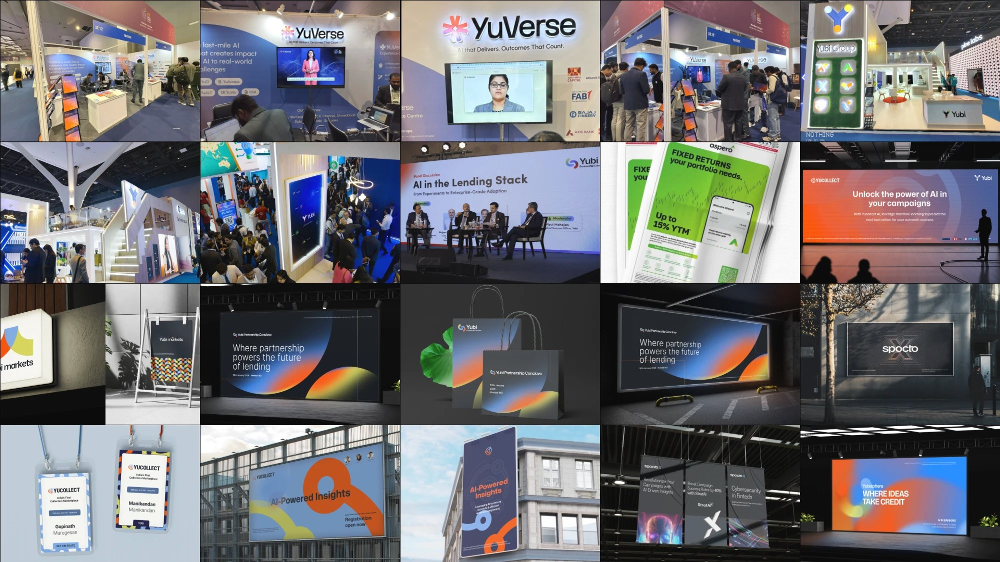
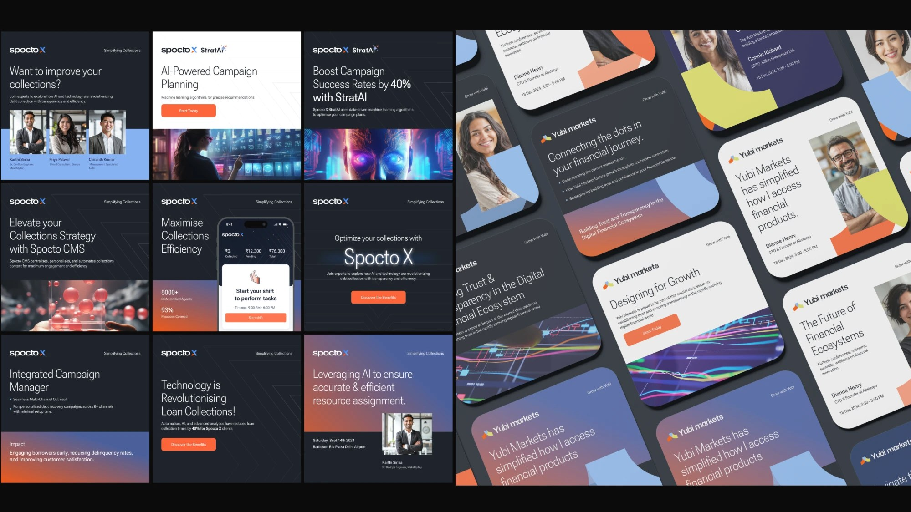

A loss-making suite, rebuilt into One Yubi.
When I joined, Yubi was a $7.4M-loss, Ops-heavy collection of drifting platforms that customers picked up the phone to avoid using. Yubi 2.0 was the design-led transformation that rebuilt it into one language, one experience, and a profitable $140M ecosystem.
Yubi was very Ops heavy. Customers were not using the platforms; they called their relationship manager and got their needs done offline. The platforms had drifted away from the original suite, and the same features existed in different products with entirely different experiences. Design worked in silos.
For customers the pain stacked up: no learning centre, no central system, a fresh learning curve on every role switch, cross-platform overlaps, and cost burns everywhere. Decision anxiety did the rest. Yubi lacked trust, and the brand had no influence on any of it. People couldn't complete basic tasks, and the system didn't scale.

Yubi 2.0 was a pure design-led initiative. The pitch to leadership was blunt: 87% drop-offs in core journeys meant the fragmented experience was directly hurting conversion, trust, support cost, and future scalability, and a unified experience had to become a company priority.
The mission that came back: design for trust, speed, and scale. Reduce drop-offs below 40%. Raise NPS and retention. Establish unified design governance. The mandate had four words on it: trust, scalability, measurable engagement, user first.
Before redesigning anything we made the problem measurable: 120+ user interviews across 6 cohorts, usage mapped over 86 modules in Amplitude, heatmaps and drop-off analytics on every core journey. Then every module was scored on the same five things, so priority was a reading, not an argument.
Every initiative ran the same way: thought at two altitudes at once. The product level fixed what one user feels on one screen. The system level fixed why it kept breaking everywhere. Planning, executing, and measuring each happened at both.
Y.Design gave the transformation its foundations: tokens layered core to theme, components shared across 12+ products, and a governance model that kept them honest. It cut engineering burn from $50.4M to $22.2M a year and saved ₹186 crore in FY25 alone. Read the full Y.Design case study.

Yubi OS is the design language that sits above the system: simplified journeys with clear, predictable paths to cut cognitive load, one navigation model, and one set of visual patterns. Whatever product a customer opened, and whatever role they switched into, the platform finally spoke one language.

Sherlock was the design-led UI/UX audit across products, built to bring standardised structure and a consistent look to the whole suite. It worked at three levels: feature, product, and component. Twelve products went under audit; a single B2C fit-and-finish pass alone documented 59 UI/UX issues.
The audit reports became a standing instrument: they are how the design system is governed, and they fed the fix pipeline that the UNIFY story tells in full.


Phoenix was the rebuild engine: take what Sherlock found, redesign the broken experiences, fix and test them, implement the design system as it landed, and leave structure behind wherever it passed. Product by product, the legacy interfaces below became Yubi 2.0.


Acquisitions had left Yubi a collection of unrelated identities, and the brand had no influence over any of them. I created a house of brands: every company got rebranded under Yubi, so trust earned anywhere in the suite accrued to one name.
New product suites launched under that house: Aspero, the retail fixed-income platform my team took from zero to one; YuCollect, the collections infrastructure; and Futurelift, a quick-strike initiative to recover 50% of serious defaults, which brought $92M back to the banks.
None of this runs on heroics; it runs on an organisation. I hired 17 designers and groomed the org into shape: 3 Leads, 1 Principal Designer, 1 Associate Director, 10 Senior Product Designers, and 5 Product Designers, plus 3 specialists across motion, visual language, and content, and a dedicated design system team of 5.
At its centre sat CRAFT: Creativity, Research, Animation, Framework, Tech. The team owned motion design, illustration, and DesignOps, and set UX and UI direction for 12 product pods. Around it I built the design process itself, with audit reports as the governance instrument for the design system. Design throughput rose 42%, and cross-team collaboration rose 60% in survey data.
The same team carried Yubi outward. I led the marketing initiative behind 6 events, 4 of them large scale, with the new brand system doing the talking. Along the way Yubi picked up industry recognition, including a best financial product award.


When I joined, Yubi was running a $7.4M loss on $20.4M of revenue. By the end of the transformation the company had crossed into profit, on an ecosystem that grew to $140M, with allocations growing 20% month on month, absolute collections growing 15%, and customer satisfaction up 53%. The customers who used to call their RM now use the platform: usage up 82%, operational dependency down 60%.
That line came from a Yubi PM, and it is the outcome under all the numbers. Design can't fix everything, but it has the power to reveal what's broken. When done with intent and empathy, design becomes a bridge between people, products, and purpose. The reward for users is clarity. The reward for the business is trust. The reward for the designers is impact that is both meaningful and measurable.